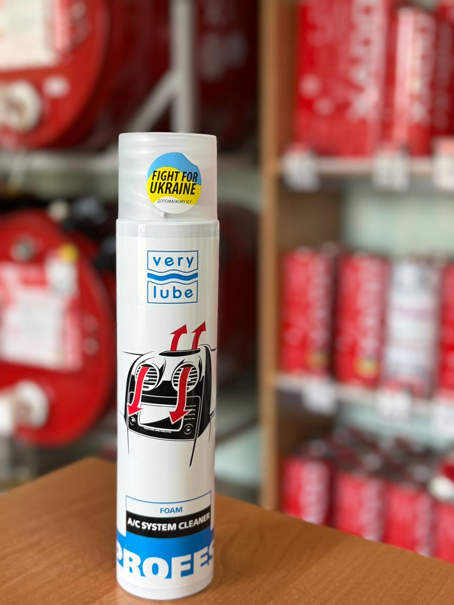

Очисник автомобільних кондиціонерів (пінний) VERYLUBE 300 мл
Ціна: 260 грн
Об’єм: 300 мл
Високоефективна активна піна VERYLUBE, створена для глибокого очищення та антибактеріальної обробки кліматичної системи авто без необхідності розбирати торпедо. Засіб легко проникає у найскладніші вигини повітропроводів. Він надійно знищує небезпечні бактерії, плісняву та грибки, які часто стають причиною алергічних реакцій та респіраторних захворювань у водіїв та пасажирів.
- Якісно вимиває накопичений бруд із системи, повертаючи в салон кришталево чисте повітря.
- Проводить потужну дезінфекцію: повністю і надовго усуває неприємний затхлий запах "мокрої ганчірки" при увімкненні обдуву.
- Формує на поверхні випарника та всередині каналів спеціальну захисну бактерицидну плівку, що блокує появу нових мікроорганізмів.
Як правильно використовувати
- Перед роботою інтенсивно струсіть балон.
- За допомогою спеціальної довгої трубки (йде в комплекті) запустіть піну глибоко у вентиляційні решітки (дефлектори), щоб засіб дістався до випарника кондиціонера.
- Залиште піну працювати на 15–30 хвилин.
- Після цього заведіть автомобіль та увімкніть вентилятор обдуву на холостих обертах приблизно на 3–4 хвилини для остаточної продувки системи.
Важливі застереження
- Безпека понад усе: Процес розпилення піни потрібно проводити тільки при вимкненому двигуні та з повністю відчиненими дверима автомобіля!
- Виконуйте очищення на свіжому повітрі або у приміщенні з дуже хорошою вентиляцією.
- Засіб містить сильнодіючі біологічно активні компоненти.
← Назад до каталогу